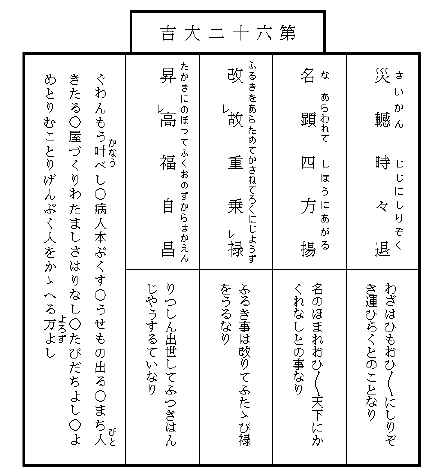

俳諧師松風庵蘿月は
今戸で
常磐津の
師匠をしている
実の妹をば今年は
盂蘭盆にもたずねずにしまったので毎日その事のみ気にしている。しかし
日盛りの暑さにはさすがに
家を出かねて夕方になるのを待つ。夕方になると竹垣に朝顔のからんだ勝手口で
行水をつかった
後そのまま
真裸体で晩酌を傾けやっとの事
膳を離れると、夏の
黄昏も家々で
焚く
蚊遣の
烟と共にいつか夜となり、
盆栽を並べた窓の外の往来には
簾越しに
下駄の音
職人の
鼻唄人の話声がにぎやかに聞え出す。蘿月は女房のお
滝に注意されてすぐにも今戸へ行くつもりで
格子戸を出るのであるが、その
辺の
涼台から声をかけられるがまま腰を
下すと、
一杯機嫌の
話好に、毎晩きまって
埒もなく話し込んでしまうのであった。
朝夕がいくらか涼しく楽になったかと思うと共に大変日が短くなって来た。朝顔の花が日ごとに小さくなり、西日が燃える焔のように狭い
家中へ差込んで来る
時分になると鳴きしきる
蝉の声が
一際耳立って
急しく聞える。八月もいつか
半過ぎてしまったのである。家の
後の
玉蜀黍の畠に吹き渡る風の
響が夜なぞは
折々雨かと
誤たれた。蘿月は若い時分したい放題身を
持崩した道楽の
名残とて時候の
変目といえば今だに骨の
節々が痛むので、いつも人より先に秋の立つのを知るのである。秋になったと思うと
唯わけもなく気がせわしくなる。
蘿月は
俄に
狼狽え出し、
八日頃の夕月がまだ
真白く夕焼の空にかかっている頃から
小梅瓦町の
住居を
後にテクテク今戸をさして歩いて行った。
堀割づたいに
曳舟通から
直ぐさま左へまがると、土地のものでなければ
行先の分らないほど
迂回した
小径が
三囲稲荷の横手を
巡って土手へと通じている。小径に沿うては
田圃を
埋立てた
空地に、新しい
貸長屋がまだ
空家のままに
立並んだ処もある。広々した構えの外には大きな庭石を
据並べた植木屋もあれば、いかにも
田舎らしい
茅葺の人家のまばらに立ちつづいている処もある。それらの
家の竹垣の間からは夕月に
行水をつかっている女の姿の見える事もあった。蘿月
宗匠はいくら年をとっても昔の
気質は変らないので見て見ぬように
窃と立止るが、大概はぞっとしない女房ばかりなので、
落胆したようにそのまま
歩調を早める。そして売地や貸家の
札を見て
過る
度々、
何ともつかずその
胸算用をしながら自分も
懐手で
大儲がして見たいと思う。しかしまた田圃づたいに歩いて行く
中水田のところどころに
蓮の花の見事に咲き乱れたさまを眺め青々した稲の葉に夕風のそよぐ響をきけば、さすがは宗匠だけに、
銭勘定の事よりも記憶に散在している古人の句をば実に
巧いものだと
思返すのであった。
土手へ
上った時には葉桜のかげは
早や
小暗く水を隔てた人家には
灯が見えた。吹きはらう
河風に桜の
病葉がはらはら散る。蘿月は休まず歩きつづけた暑さにほっと息をつき、ひろげた胸をば
扇子であおいだが、まだ店をしまわずにいる
休茶屋を見付けて
慌忙て立寄り、「おかみさん、
冷で一杯。」と腰を
下した。正面に
待乳山を見渡す
隅田川には夕風を
孕んだ帆かけ船が
頻りに動いて行く。水の
面の
黄昏れるにつれて
鴎の羽の色が
際立って白く見える。宗匠はこの景色を見ると時候はちがうけれど酒なくて何の
己れが桜かなと急に一杯傾けたくなったのである。
休茶屋の
女房が
縁の厚い底の上ったコップについで出す
冷酒を、蘿月はぐいと
飲干してそのまま
竹屋の
渡船に乗った。丁度河の中ほどへ来た頃から舟のゆれるにつれて冷酒がおいおいにきいて来る。葉桜の上に輝きそめた夕月の光がいかにも涼しい。
滑な満潮の水は「お前どこ行く」と
流行唄にもあるようにいかにも
投遣った
風に心持よく流れている。宗匠は目をつぶって
独で鼻唄をうたった。
向河岸へつくと急に思出して近所の菓子屋を探して
土産を買い
今戸橋を渡って
真直な道をば自分ばかりは
足許のたしかなつもりで、実は大分ふらふらしながら歩いて行った。
そこ
此処に二、三軒
今戸焼を売る店にわずかな特徴を見るばかり、
何処の場末にもよくあるような低い人家つづきの
横町である。人家の軒下や
路地口には話しながら涼んでいる人の
浴衣が薄暗い
軒燈の光に
際立って白く見えながら、あたりは一体にひっそりして
何処かで犬の
吠える声と
赤児のなく声が聞える。
天の
川の
澄渡った空に
繁った木立を
聳かしている
今戸八幡の前まで来ると、蘿月は
間もなく並んだ軒燈の間に
常磐津文字豊と
勘亭流で書いた妹の家の
灯を認めた。家の前の往来には人が二、三人も立止って
内なる
稽古の
浄瑠璃を聞いていた。
折々恐しい音して
鼠の走る天井からホヤの曇った
六分心のランプがところどころ
宝丹の広告や『
都新聞』の新年附録の美人画なぞで
破れ
目をかくした
襖を始め、
飴色に古びた
箪笥、
雨漏のあとのある古びた壁なぞ、八畳の座敷一体をいかにも薄暗く
照している。古ぼけた
葭戸を立てた縁側の
外には
小庭があるのやらないのやら分らぬほどな
闇の中に軒の
風鈴が
淋しく鳴り虫が
静に鳴いている。師匠のお
豊は縁日ものの植木鉢を並べ、
不動尊の掛物をかけた
床の
間を
後にしてべったり
坐った
膝の上に
三味線をかかえ、
樫の
撥で時々前髪のあたりをかきながら、掛声をかけては弾くと、
稽古本を広げた
桐の小机を中にして
此方には三十前後の商人らしい男が
中音で、「そりや何をいはしやんす、今さら兄よ
妹といふにいはれぬ
恋中は……。」と「
小稲半兵衛」の
道行を語る。
蘿月は稽古のすむまで
縁近くに坐って、
扇子をぱちくりさせながら、まだ
冷酒のすっかり
醒めきらぬ処から、時々は我知らず口の中で稽古の男と一しょに
唄ったが、時々は目をつぶって遠慮なく

をした
後、
身体を軽く
左右にゆすりながらお豊の顔をば何の気もなく眺めた。お豊はもう四十以上であろう。薄暗い
釣ランプの光が
痩せこけた小作りの
身体をばなお更に
老けて見せるので、ふいとこれが昔は立派な
質屋の可愛らしい
箱入娘だったのかと思うと、蘿月は悲しいとか
淋しいとかそういう現実の感慨を
通過して、
唯だ唯だ不思議な気がしてならない。その頃は自分もやはり若くて美しくて、女にすかれて、道楽して、とうとう実家を
七生まで
勘当されてしまったが、今になってはその頃の事はどうしても事実ではなくて夢としか思われない。
算盤で
乃公の頭をなぐった
親爺にしろ、泣いて意見をした
白鼠の番頭にしろ、
暖簾を分けてもらったお豊の亭主にしろ、そういう人たちは怒ったり笑ったり泣いたり喜んだりして、汗をたらして
飽きずによく働いていたものだが、
一人々々皆死んでしまった
今日となって見れば、あの人たちはこの世の中に生れて来ても来なくてもつまる処は同じようなものだった。まだしも自分とお豊の生きている間は、あの人たちは
両人の記憶の
中に残されているものの、やがて自分たちも死んでしまえばいよいよ何も
彼も煙になって
跡方もなく消え
失せてしまうのだ……。
「
兄さん、実は二、三日
中に
私の方からお邪魔に
上ろうと思っていたんだよ。」とお豊が突然話しだした。
稽古の男は「
小稲半兵衛」をさらった
後同じような「お
妻八郎兵衛」の
語出しを二、三度
繰返して帰って行ったのである。蘿月は
尤もらしく
坐り
直して扇子で軽く
膝を
叩いた。
「実はね。」とお豊は同じ言葉を繰返して、「
駒込のお寺が市区改正で取払いになるんだとさ。それでね、死んだお
父つァんのお墓を
谷中か
染井か
何処かへ移さなくっちゃならないんだってね、四、五日前にお寺からお使が来たから、どうしたものかと、その相談に行こうと思ってたのさ。」
「なるほど。」と蘿月は
頷付いて、「そういう事なら
打捨っても置けまい。もう何年になるかな、
親爺が死んでから……。」
首を
傾げて考えたが、お豊の方は着々話しを進めて染井の墓地の
地代が
一坪いくら、寺への心付けがどうのこうのと、それについては女の身よりも男の蘿月に万事を引受けて取計らってもらいたいというのであった。
蘿月はもと
小石川表町の
相模屋という質屋の
後取息子であったが勘当の
末若隠居の身となった。頑固な父が世を去ってからは妹お豊を妻にした店の番頭が正直に相模屋の商売をつづけていた。ところが
御維新この
方時勢の変遷で次第に家運の傾いて来た折も折火事にあって質屋はそれなり
潰れてしまった。で、
風流三昧の蘿月はやむをえず
俳諧で世を渡るようになり、お豊はその
後亭主に死別れた不幸つづきに昔名を取った遊芸を幸い
常磐津の師匠で
生計を立てるようになった。お豊には今年十八になる男の子が一人ある。
零落した女親がこの世の楽しみというのは全くこの一人息子
長吉の出世を見ようという事ばかりで、商人はいつ失敗するか分らないという経験から、お豊は三度の飯を二度にしても、行く行くはわが
児を大学校に入れて立派な月給取りにせねばならぬと思っている。
蘿月
宗匠は冷えた茶を
飲干しながら、「長吉はどうしました。」
するとお豊はもう得意らしく、「学校は今夏休みですがね、遊ばしといちゃいけないと思って
本郷まで夜学にやります。」
「じゃ帰りは
晩いね。」
「ええ。いつでも十時過ぎますよ。電車はありますがね、随分
遠路ですからね。」
「
吾輩とは違って今時の若いものは感心だね。」宗匠は言葉を切って、「中学校だっけね、
乃公は子供を持った事がねえから
当節の学校の事はちっとも分らない。大学校まで行くにゃまだよほどかかるのかい。」
「来年卒業してから試験を受けるんでさアね。大学校へ行く前に、もう一ツ……大きな学校があるんです。」お豊は何も
彼も
一口に説明してやりたいと心ばかりは
急っても、やはり時勢に
疎い女の事で
忽ちいい
淀んでしまった。
「たいした
経費だろうね。」
「ええそれァ、大抵じゃありませんよ。何しろ、あなた、月謝ばかりが
毎月一円、本代だって試験の
度々に二、三円じゃききませんしね、それに夏冬ともに洋服を着るんでしょう、靴だって年に二足は
穿いてしまいますよ。」
お豊は調子づいて苦心のほどを一倍強く見せようためか声に力を入れて話したが、蘿月はその時、それほどにまで無理をするなら、何も大学校へ入れないでも、長吉にはもっと身分相応な立身の
途がありそうなものだという気がした。しかし口へ出していうほどの事でもないので、何か話題の変化をと望む
矢先へ、自然に思い出されたのは長告が子供の時分の遊び友達でお
糸といった
煎餅屋の娘の事である。蘿月はその頃お豊の家を訪ねた時にはきまって
甥の長吉とお糸をつれては
奥山や
佐竹ッ
原の
見世物を見に行ったのだ。
「長吉が十八じゃ、あの
娘はもう立派な
姉さんだろう。やはり稽古に来るかい。」
「
家へは来ませんがね、この先の
杵屋さんにゃ毎日
通ってますよ。もう
直き
葭町へ出るんだっていいますがね……。」とお豊は何か考えるらしく
語を切った。
「葭町へ出るのか。そいつア
豪儀だ。子供の時からちょいと口のききようのませた、
好い
娘だったよ。今夜にでも遊びに来りゃアいいに。ねえ、お豊。」と宗匠は急に元気づいたが、お豊はポンと
長煙管をはたいて、
「以前とちがって、長吉も今が勉強ざかりだしね……。」
「ははははは。間違いでもあっちゃならないというのかね。
尤もだよ。この道ばかりは全く油断がならないからな。」
「ほんとさ。お前さん。」お豊は首を長く
延して、「私の
僻目かも知れないが、実はどうも長吉の様子が心配でならないのさ。」
「だから、いわない
事ッちゃない。」と蘿月は軽く握り
拳で
膝頭をたたいた。お豊は長吉とお糸のことが
唯何となしに心配でならない。というのは、お糸が
長唄の稽古帰りに毎朝用もないのにきっと立寄って見る、それをば長吉は必ず待っている様子でその時間
頃には
一足だって窓の
傍を去らない。それのみならず、いつぞやお糸が病気で十日ほども寝ていた時には、長吉は
外目も
可笑しいほどにぼんやりしていた事などを息もつかずに語りつづけた。
次の
間の時計が九時を打出した時突然
格子戸ががらりと明いた。その明けようでお豊はすぐに長吉の帰って来た事を知り急に話を
途切しその方に振返りながら、
「大変早いようだね、今夜は。」
「先生が病気で一時間早くひけたんだ。」
「
小梅の伯父さんがおいでだよ。」
返事は聞えなかったが、次の
間に
包を投出す音がして、
直様長吉は
温順しそうな弱そうな色の白い顔を
襖の間から見せた。
残暑の夕日が
一しきり夏の
盛よりも
烈しく、ひろびろした
河面一帯に燃え立ち、
殊更に大学の
艇庫の
真白なペンキ塗の
板目に反映していたが、
忽ち
燈の光の消えて行くようにあたりは全体に薄暗く灰色に変色して来て、満ち来る
夕汐の上を滑って行く
荷船の帆のみが真白く
際立った。と見る
間もなく
初秋の
黄昏は幕の
下るように早く夜に変った。流れる水がいやに
眩しくきらきら光り出して、
渡船に乗っている人の形をくっきりと
墨絵のように黒く染め出した。堤の上に長く
横わる葉桜の
木立は
此方の岸から望めば恐しいほど
真暗になり、
一時は面白いように引きつづいて動いていた荷船はいつの間にか
一艘残らず上流の
方に消えてしまって、
釣の帰りらしい小舟がところどころ
木の
葉のように浮いているばかり、見渡す
隅田川は再びひろびろとしたばかりか
静に
淋しくなった。遥か
川上の空のはずれに夏の名残を示す雲の峰が立っていて細い稲妻が
絶間なく
閃めいては消える。
長吉は
先刻から一人ぼんやりして、
或時は
今戸橋の
欄干に
凭れたり、或時は岸の石垣から
渡場の
桟橋へ下りて見たりして、夕日から黄昏、黄昏から夜になる河の景色を眺めていた。今夜暗くなって人の顔がよくは見えない時分になったら今戸橋の上でお糸と
逢う約束をしたからである。しかし丁度日曜日に当って夜学校を口実にも出来ない処から
夕飯を
済すが否やまだ日の落ちぬ
中ふいと
家を出てしまった。一しきり渡場へ急ぐ人の
往来も今では
殆ど絶え、橋の下に
夜泊りする荷船の
燈火が
慶養寺の高い木立を
倒に映した
山谷堀の水に美しく流れた。
門口に柳のある新しい二階家からは三味線が聞えて、水に添う低い
小家の
格子戸外には
裸体の亭主が涼みに出はじめた。長吉はもう来る時分であろうと思って
一心に橋向うを眺めた。
最初に橋を渡って来た人影は黒い麻の
僧衣を着た坊主であった。つづいて
尻端折の
股引にゴム靴をはいた
請負師らしい男の通った
後、
暫くしてから、
蝙蝠傘と小包を提げた貧し
気な女房が
日和下駄で色気もなく砂を
蹴立てて
大股に歩いて行った。もういくら待っても人通りはない。長吉は
詮方なく疲れた眼を河の方に移した。
河面は
先刻よりも一体に
明くなり気味悪い雲の峯は影もなく消えている。長吉はその時
長命寺辺の堤の上の木立から、
他分旧暦七月の満月であろう、赤味を帯びた大きな月の昇りかけているのを認めた。空は鏡のように
明いのでそれを
遮る堤と木立はますます黒く、星は宵の明星の
唯た一つ見えるばかりでその
他は
尽く余りに明い空の光に掻き消され、横ざまに長く
棚曳く雲のちぎれが銀色に
透通って輝いている。見る見る
中満月が木立を離れるに従い
河岸の夜露をあびた
瓦屋根や、水に
湿れた
棒杭、満潮に流れ寄る石垣下の
藻草のちぎれ、船の横腹、
竹竿なぞが、
逸早く月の光を受けて
蒼く輝き出した。忽ち長吉は自分の影が橋板の上に段々に濃く描き出されるのを知った。通りかかるホーカイ
節の男女が二人、「まア御覧よ。お月様。」といって
暫く立止った
後、山谷堀の
岸辺に曲るが否や
当付がましく、

書生さん橋の
欄干に腰
打かけて――
と立ちつづく
小家の前で歌ったが金にならないと見たか歌いも
了らず、元の
急足で
吉原土手の方へ行ってしまった。
長吉はいつも
忍会の恋人が経験するさまざまの
懸念と待ちあぐむ心のいらだちの
外に、何とも知れぬ一種の悲哀を感じた。お糸と自分との行末……行末というよりも今夜会って
後の
明日はどうなるのであろう。お糸は今夜
兼てから話のしてある
葭町の
芸者屋まで出掛けて相談をして来るという事で、その
道中をば二人一緒に話しながら歩こうと約束したのである。お糸がいよいよ芸者になってしまえばこれまでのように毎日
逢う事ができなくなるのみならず、それが万事の終りであるらしく思われてならない。自分の知らない
如何にも遠い国へと再び帰る事なく
去ってしまうような気がしてならないのだ。今夜のお月様は忘れられない。一生に二度見られない月だなアと長吉はしみじみ思った。あらゆる記憶の数々が電光のように
閃く。最初
地方町の小学校へ行く頃は毎日のように
喧嘩して遊んだ。やがては
皆なから近所の
板塀や土蔵の壁に
相々傘をかかれて
囃された。小梅の伯父さんにつれられて奥山の
見世物を見に行ったり池の
鯉に
麩をやったりした。
三社祭の折お糸は或年
踊屋台へ出て
道成寺を踊った。町内一同で
毎年汐干狩に行く船の上でもお糸はよく踊った。学校の帰り道には毎日のように
待乳山の
境内で待合せて、人の知らない
山谷の裏町から
吉原田圃を歩いた……。ああ、お糸は
何故芸者なんぞになるんだろう。芸者なんぞになっちゃいけないと引止めたい。長吉は無理にも引止めねばならぬと決心したが、すぐその
傍から、自分はお糸に対しては到底それだけの威力のない事を
思返した。
果敢い絶望と
諦めとを感じた。お糸は二ツ年下の十六であるが、この頃になっては長吉は
殊更に日一日とお糸が
遥か年上の姉であるような心持がしてならぬのであった。いや最初からお糸は長吉よりも強かった。長吉よりも
遥に
臆病ではなかった。お糸長吉と相々傘にかかれて皆なから囃された時でもお糸は
びくともしなかった。平気な顔で
長ちゃんはあたいの
旦那だよと
怒鳴った。去年初めて学校からの帰り道を待乳山で待ち合わそうと
申出したのもお糸であった。
宮戸座の
立見へ行こうといったのもお糸が先であった。帰りの
晩くなる事をもお糸の方がかえって心配しなかった。知らない道に迷っても、お糸は行ける処まで行って御覧よ。
巡査さんにきけば分るよといって、かえって面白そうにずんずん歩いた……。
あたりを構わず橋板の上に
吾妻下駄を
鳴す
響がして、小走りに突然お糸がかけ寄った。
「おそかったでしょう。気に入らないんだもの、
母さんの
結った髪なんぞ。」と
馳け出したために
殊更ほつれた
鬢を直しながら、「おかしいでしょう。」
長吉はただ眼を円くしてお糸の顔を見るばかりである。いつもと変りのない元気のいいはしゃぎ切った様子がこの場合むしろ憎らしく思われた。遠い
下町に行って芸者になってしまうのが少しも悲しくないのかと長吉はいいたい事も胸一ぱいになって口には出ない。お糸は
河水を
照す玉のような月の光にも
一向気のつかない様子で、
「早く行こうよ。
私お金持ちだよ。今夜は。
仲店でお土産を買って行くんだから。」とすたすた歩きだす。
「
明日、きっと帰るか。」長吉は
吃るようにしていい切った。
「明日帰らなければ、
明後日の朝はきっと帰って来てよ。不断着だの、いろんなもの持って行かなくっちゃならないから。」
待乳山の
麓を
聖天町の方へ出ようと細い
路地をぬけた。
「
何故黙ってるのよ。どうしたの。」
「
明後日帰って来てそれからまたあっちへ
去ってしまうんだろう。え。お糸ちゃんはもうそれなり向うの人になっちまうんだろう。もう僕とは会えないんだろう。」
「ちょいちょい遊びに帰って来るわ。だけれど、
私も一生懸命にお
稽古しなくっちゃならないんだもの。」
少しは声を
曇したもののその調子は長吉の満足するほどの悲愁を帯びてはいなかった。長吉は
暫くしてからまた突然に、
「なぜ芸者なんぞになるんだ。」
「またそんな事きくの。おかしいよ。長さんは。」
お糸は
已に長吉のよく知っている事情をば再びくどくどしく
繰返した。お糸が芸者になるという事は二、三年いやもっと前から長吉にも
能く分っていた事である。その
起因は大工であったお糸の父親がまだ生きていた
頃から
母親は
手内職にと針仕事をしていたが、その
得意先の一軒で
橋場の
妾宅にいる
御新造がお糸の姿を見て是非
娘分にして
行末は立派な芸者にしたてたいといい出した事からである。御新造の実家は
葭町で幅のきく
芸者家であった。しかしその頃のお糸の
家はさほどに困ってもいなかったし、第一に可愛い
盛の子供を手放すのが
辛かったので、親の手元でせいぜい芸を仕込ます事になった。その
後父親が死んだ折には
差当り頼りのない母親は橋場の御新造の世話で今の
煎餅屋を出したような関係もあり、万事が金銭上の義理ばかりでなくて
相方の好意から自然とお糸は葭町へ行くように
誰れが
強いるともなく
決っていたのである。百も承知しているこんな事情を長吉はお糸の口からきくために質問したのでない。お糸がどうせ行かねばならぬものなら、もう少し悲しく自分のために
別を惜しむような調子を見せてもらいたいと思ったからだ。長吉は自分とお糸の間にはいつの
間にか
互に疎通しない感情の相違の生じている事を
明かに知って、更に深い
悲みを感じた。
この悲みはお糸が土産物を買うため
仁王門を過ぎて
仲店へ出た時更にまた堪えがたいものとなった。
夕涼に出掛ける
賑かな人出の中にお糸はふいと立止って、並んで歩く長吉の
袖を引き、「長さん、あたいも
直きあんな
扮装するんだねえ。
絽縮緬だねきっと、あの羽織……。」
長吉はいわれるままに見返ると、島田に
結った芸者と、それに
連立って行くのは
黒絽の紋付をきた立派な紳士であった。ああお糸が芸者になったら一緒に手を引いて歩く人はやっぱりああいう立派な紳士であろう。自分は何年たったらあんな紳士になれるのか知ら。
兵児帯一ツの
現在の書生姿がいうにいわれず情なく思われると同時に、長吉はその将来どころか現在においても、
已に単純なお糸の友達たる資格さえないもののような心持がした。
いよいよ
御神燈のつづいた葭町の
路地口へ来た時、長吉はもうこれ以上
果敢いとか悲しいとか思う元気さえなくなって、
唯だぼんやり、狭く暗い路地裏のいやに奥深く行先知れず
曲込んでいるのを不思議そうに
覗込むばかりであった。
「あの、
一イ
二ウ
三イ……四つ目の
瓦斯燈の出てるところだよ。
松葉屋と書いてあるだろう。ね。あの
家よ。」とお糸はしばしば橋場の御新造につれて来られたり、またはその用事で使いに来たりして
能く知っている
軒先の
燈を指し示した。
「じゃア僕は帰るよ。もう……。」というばかりで長吉はやはり立止っている。その袖をお糸は軽く
捕えて
忽ち
媚るように寄添い、
「
明日か
明後日、
家へ帰って来た時きっと
逢おうね。いいかい。きっとよ。約束してよ。あたいの
家へお
出よ。よくッて。」
「ああ。」
返事をきくと、お糸はそれですっかり安心したものの如くすたすた路地の
溝板を
吾妻下駄に踏みならし振返りもせずに行ってしまった。その足音が長吉の耳には急いで
馳けて行くように聞えた、かと思う
間もなく、ちりんちりんと格子戸の鈴の音がした。長吉は覚えず
後を追って
路地内へ
這入ろうとしたが、同時に一番近くの格子戸が人声と共に
開いて、細長い
弓張提灯を持った男が出て来たので、
何という事なく長吉は
気後れのしたばかりか、顔を見られるのが
厭さに、
一散に通りの方へと
遠かった。円い月は形が
大分小くなって光が
蒼く澄んで、
静に
聳える裏通りの倉の屋根の上、星の多い空の
真中に高く昇っていた。
月の出が
夜ごとおそくなるにつれてその光は段々
冴えて来た。
河風の
湿ッぽさが次第に強く感じられて来て
浴衣の肌がいやに薄寒くなった。月はやがて人の起きている
頃にはもう昇らなくなった。空には朝も昼過ぎも夕方も、いつでも雲が多くなった。雲は
重り合って絶えず動いているので、時としては
僅かにその
間々に
殊更らしく色の濃い青空の残りを見せて置きながら、空一面に
蔽い
冠さる。すると気候は恐しく
蒸暑くなって来て、自然と
浸み出る
脂汗が不愉快に人の肌をねばねばさせるが、しかしまた、そういう時にはきまって、その強弱とその方向の定まらない風が突然に吹き起って、雨もまた降っては
止み、止んではまた降りつづく事がある。この風やこの雨には一種特別の底深い力が含まれていて、寺の樹木や、
河岸の
葦の葉や、場末につづく貧しい家の板屋根に、春や夏には決して聞かれない音響を伝える。日が恐しく早く暮れてしまうだけ、長い
夜はすぐに
寂々と
更け渡って来て、夏ならば夕涼みの下駄の音に
遮られてよくは聞えない八時か九時の時の鐘があたりをまるで十二時の如く
静にしてしまう。
蟋蟀の声はいそがしい。
燈火の色はいやに澄む。秋。ああ秋だ。長吉は初めて秋というものはなるほどいやなものだ。実に
淋しくって
堪らないものだと身にしみじみ感じた。
学校はもう
昨日から始っている。朝早く母親の用意してくれる弁当箱を書物と
一所に包んで
家を出て見たが、二日目三日目にはつくづく遠い
神田まで歩いて行く気力がなくなった。今までは
毎年長い夏休みの終る頃といえば学校の教場が
何となく恋しく授業の開始する日が
心待に待たれるようであった。そのういういしい心持はもう全く消えてしまった。つまらない。学問なんぞしたってつまるものか。学校は
己れの望むような幸福を与える処ではない。……幸福とは無関係のものである事を長吉は物新しく感じた。
四日目の朝いつものように七時前に
家を出て
観音の
境内まで歩いて来たが、長吉はまるで疲れきった
旅人が
路傍の石に腰をかけるように、本堂の横手のベンチの上に腰を
下した。いつの間に掃除をしたものか朝露に湿った
小砂利の上には、投捨てた汚い
紙片もなく、朝早い境内はいつもの
雑沓に引かえて妙に広く
神々しく
寂としている。本堂の廊下には
此処で
夜明ししたらしい
迂散な男が今だに幾人も腰をかけていて、その中には
垢じみた
単衣の
三尺帯を解いて平気で
褌をしめ直している
奴もあった。この頃の
空癖で空は低く
鼠色に曇り、あたりの樹木からは
虫噛んだ青いままの
木葉が絶え間なく落ちる。
烏や
鶏の
啼声鳩の
羽音が
爽かに力強く聞える。
溢れる水に
濡れた
御手洗の石が
飜える奉納の
手拭のかげにもう何となく
冷いように思われた。それにもかかわらず朝参りの男女は本堂の階段を
上る前にいずれも手を洗うためにと立止まる。その人々の中に長吉は偶然にも若い一人の芸者が、口には桃色のハンケチを
啣えて、
一重羽織の
袖口を
濡すまいためか、
真白な手先をば腕までも見せるように長くさし
伸しているのを認めた。同時にすぐ隣のベンチに腰をかけている書生が二人、「見ろ見ろ、ジンゲルだ。わるくないなア。」といっているのさえ耳にした。
島田に
結って弱々しく両肩の
撫で
下った小作りの姿と、
口尻のしまった
円顔、十六、七の同じような年頃とが、長吉をしてその瞬間
危くベンチから飛び立たせようとしたほどお糸のことを連想せしめた。お糸は月のいいあの晩に約束した通り、その翌々日に、それからは長く
葭町の人たるべく手荷物を取りに帰って来たが、その時長吉はまるで別の人のようにお糸の姿の変ってしまったのに驚いた。赤いメレンスの帯ばかり
締めていた娘姿が、突然たった一日の
間に、丁度今
御手洗で手を洗っている若い芸者そのままの姿になってしまったのだ。薬指にはもう
指環さえ
穿めていた。用もないのに
幾度となく帯の間から鏡入れや
紙入を抜き出して、
白粉をつけ直したり
鬢のほつれを
撫で上げたりする。
戸外には車を待たして置いていかにも
急しい大切な用件を身に帯びているといった
風で一時間もたつかたたない
中に帰ってしまった。その帰りがけ長吉に残した最後の言葉はその母親の「
御師匠さんのおばさん」にもよろしくいってくれという事であった。まだ
何時出るのか分らないからまた近い中に遊びに来るわという
懐しい声も
聞れないのではなかったが、それはもう今までのあどけない約束ではなくて、
世馴れた人の
如才ない
挨拶としか長吉には聞取れなかった。娘であったお糸、
幼馴染の恋人のお糸はこの世にはもう生きていないのだ。
路傍に寝ている犬を
驚して勢よく
駈け去った車の
後に、えもいわれず立迷った化粧の
匂いが、いかに苦しく、いかに
切なく
身中にしみ渡ったであろう……。
本堂の中にと消えた若い芸者の姿は再び階段の下に現れて
仁王門の方へと、
素足の指先に
突掛けた
吾妻下駄を
内輪に軽く踏みながら歩いて行く。長吉はその
後姿を見送るとまた更に恨めしいあの車を見送った時の
一刹那を思起すので、もう
何としても我慢が出来ぬというようにベンチから立上った。そして知らず知らずその後を追うて
仲店の
尽るあたりまで来たが、若い芸者の姿は
何処の
横町へ曲ってしまったものか、もう見えない。両側の店では店先を掃除して品物を並べたてている
最中である。長吉は夢中で
雷門の方へどんどん歩いた。若い芸者の
行衛を
見究めようというのではない。自分の眼にばかりありあり見えるお糸の後姿を追って行くのである。学校の事も何も
彼も忘れて、
駒形から
蔵前、蔵前から
浅草橋……それから
葭町の方へとどんどん歩いた。しかし電車の
通っている
馬喰町の大通りまで来て、長吉はどの横町を曲ればよかったのか少しく当惑した。けれども大体の方角はよく分っている。東京に生れたものだけに道をきくのが
厭である。恋人の住む町と思えば、その名を
徒に路傍の他人に
漏すのが、心の秘密を探られるようで、唯わけもなく恐しくてならない。長吉は仕方なしに
唯だ左へ左へと、いいかげんに折れて行くと
蔵造りの問屋らしい商家のつづいた同じような堀割の岸に二度も出た。その結果長吉は遥か向うに
明治座の屋根を見てやがてやや広い往来へ出た時、その遠い道のはずれに
河蒸汽船の汽笛の音の聞えるのに、初めて自分の位置と町の方角とを
覚った。同時に非常な
疲労を感じた。制帽を
冠った
額のみならず汗は
袴をはいた帯のまわりまでしみ出していた。しかしもう一瞬間とても休む気にはならない。長吉は月の
夜に連れられて来た
路地口をば、これはまた一層の苦心、一層の
懸念、一層の疲労を以って、やっとの事で
見出し得たのである。
片側に朝日がさし込んでいるので路地の
内は突当りまで
見透された。
格子戸づくりの
小い
家ばかりでない。昼間見ると意外に屋根の高い倉もある。
忍返しをつけた
板塀もある。その上から松の枝も見える。
石灰の散った便所の掃除口も見える。
塵芥箱の並んだ処もある。その
辺に猫がうろうろしている。人通りは案外に
烈しい。極めて狭い
溝板の上を通行の人は
互に身を斜めに
捻向けて行き
交う。
稽古の
三味線に人の話声が
交って聞える。
洗物する
水音も聞える。赤い腰巻に
裾をまくった
小女が
草箒で溝板の上を掃いている。格子戸の格子を一本々々一生懸命に磨いているのもある。長吉は人目の多いのに
気後れしたのみでなく、さて路地内に
進入ったにした処で、自分はどうするのかと初めて反省の地位に返った。人知れず
松葉屋の前を通って、そっとお糸の姿を
垣間見たいとは思ったが、あたりが余りに
明過ぎる。さらばこのまま路地口に立っていて、お糸が何かの用で外へ出るまでの機会を待とうか。しかしこれもまた、長吉には近所の店先の人目が
尽く自分ばかりを見張っているように思われて、とても五分と長く立っている事はできない。長吉はとにかく
思案をしなおすつもりで、折から近所の子供を得意にする
粟餅屋の
爺がカラカラカラと
杵をならして来る向うの
横町の
方へと
遠かった。
長吉は
浜町の横町をば次第に道の行くままに
大川端の方へと歩いて行った。いかほど機会を待っても
昼中はどうしても不便である事を
僅かに悟り得たのであるが、すると、今度はもう学校へは遅くなった。休むにしても今日の半日、これから午後の三時までをどうして
何処に消費しようかという問題の解決に
迫められた。母親のお
豊は学校の時間割までをよく
知抜いているので、長吉の帰りが一時間早くても、
晩くても、すぐに心配して
煩く質問する。無論長吉は何とでも
容易くいい
紛らすことは出来ると思うものの、それだけの
嘘をつく良心の苦痛に
逢うのが
厭でならない。丁度来かかる川端には、
水練場の板小屋が取払われて、柳の
木蔭に人が
釣をしている。それをば通りがかりの人が四人も五人もぼんやり立って見ているので、長吉はいい都合だと同じように釣を眺める
振でそのそばに立寄ったが、もう立っているだけの力さえなく、柳の根元の
支木に背をよせかけながら
蹲踞んでしまった。
さっきから空の大半は
真青に晴れて来て、絶えず風の吹き
通うにもかかわらず、じりじり人の肌に
焼附くような
湿気のある秋の日は、目の前なる
大川の水一面に
眩しく照り輝くので、往来の片側に長くつづいた
土塀からこんもりと枝を
伸した
繁りの
蔭がいかにも涼しそうに思われた。
甘酒屋の
爺がいつかこの
木蔭に赤く塗った荷を
下していた。
川向は日の光の強いために立続く人家の
瓦屋根をはじめ一帯の眺望がいかにも汚らしく見え、風に追いやられた雲の列が
盛に
煤煙を
吐く
製造場の
烟筒よりも
遥に低く、動かずに層をなして
浮んでいる。釣道具を売る
後の
小家から十一時の時計が鳴った。長吉は数えながらそれを聞いて、初めて自分はいかに長い時間を歩き暮したかに驚いたが、同時にこの
分で行けば三時までの時間を空費するのもさして
難くはないとやや安心することも出来た。長吉は
釣師の一人が
握飯を食いはじめたのを見て、同じように弁当箱を開いた。開いたけれども何だか気まりが悪くて、誰か見ていやしないかときょろきょろ
四辺を見廻した。幸い
午近くのことで見渡す川岸に人の往来は
杜絶えている。長吉は出来るだけ早く
飯でも
菜でも
皆な
鵜呑みにしてしまった。釣師はいずれも木像のように黙っているし、甘酒屋の爺は居眠りしている。
午過の川端はますます
静になって犬さえ歩いて来ない処から、さすがの長吉も自分は
何故こんなに気まりを悪がるのであろう
臆病なのであろうと我ながら
可笑しい気にもなった。
両国橋と
新大橋との間を
一廻した
後、長吉はいよいよ
浅草の方へ帰ろうと決心するにつけ、「もしや」という一念にひかされて再び葭町の路地口に立寄って見た。すると
午前ほどには人通りがないのに
先ず安心して、おそるおそる松葉屋の前を通って見たが、
家の中は外から見ると非常に暗く、人の声三味線の音さえ聞えなかった。けれども長吉には誰にも
咎められずに恋人の住む
家の前を通ったというそれだけの事が、
殆んど
破天荒の冒険を
敢てしたような満足を感じさせたので、これまで歩きぬいた身の疲労と苦痛とを長吉は
遂に後悔しなかった。
その週間の残りの
日数だけはどうやらこうやら、長吉は学校へ通ったが、日曜日一日を
過すとその
翌朝は電車に乗って
上野まで来ながらふいと
下りてしまった。教師に差出すべき代数の宿題を一つもやって置かなかった。英語と漢文の
下読をもして置かなかった。それのみならず今日はまた、
凡そ世の中で何よりも嫌いな何よりも恐しい機械体操のある事を思い出したからである。長吉には鉄棒から
逆にぶらさがったり、人の
丈より高い棚の上から飛下りるような事は、いかに
軍曹上りの教師から
強いられても全級の生徒から
一斉に笑われても到底出来
得べきことではない。何によらず体育の遊戯にかけては、長吉はどうしても他の生徒一同に
伴って行く事が出来ないので、自然と
軽侮の声の中に孤立する。その結果は、遂に一同から意地悪くいじめられる事になりやすい。学校は単にこれだけでも随分
厭な処、苦しいところ、
辛い処であった。されば長吉はその母親がいかほど望んだ処で今になっては高等学校へ
這入ろうという気は全くない。もし入学すれば校則として
当初の一年間は是非とも狂暴無残な寄宿舎生活をしなければならない事を
聴知っていたからである。高等学校寄宿舎内に起るいろいろな
逸話は早くから長吉の
胆を
冷しているのであった。いつも画学と習字にかけては全級誰も及ぶもののない長吉の性情は、
鉄拳だとか柔術だとか
日本魂だとかいうものよりも全く
異った他の方面に傾いていた。子供の時から朝夕に母が
渡世の
三味線を聴くのが大好きで、習わずして自然に
絃の調子を覚え、町を通る
流行唄なぞは一度聴けば
直ぐに記憶する位であった。
小梅の伯父なる
蘿月宗匠は早くも名人になるべき素質があると見抜いて、長吉をば
檜物町でも
植木店でも
何処でもいいから一流の家元へ弟子入をさせたらばとお豊に勧めたがお豊は断じて承諾しなかった。のみならず以来は長吉に三味線を
弄る事をば
口喧しく禁止した。
長吉は蘿月の伯父さんのいったように、あの時分から三味線を
稽古したなら、今頃はとにかく
一人前の芸人になっていたに違いない。さすればよしやお糸が芸者になったにした処で、こんなに
悲惨な目に
遇わずとも済んだであろう。ああ実に取返しのつかない事をした。一生の方針を誤ったと感じた。母親が急に憎くなる。例えられぬほど
怨しく思われるに反して、蘿月の伯父さんの事が
何となく
取縋って見たいように
懐しく思返された。これまでは何の気もなく母親からもまた伯父自身の口からも
度々聞かされていた伯父が
放蕩三昧の経歴が恋の苦痛を知り
初めた長吉の心には
凡て新しい何かの意味を以て解釈されはじめた。長吉は第一に「小梅の伯母さん」というのは
元金瓶大黒の
華魁で明治の初め
吉原解放の時小梅の伯父さんを頼って来たのだとやらいう話を思出した。伯母さんは子供の
頃自分をば非常に可愛がってくれた。それにもかかわらず、自分の母親のお豊はあまり
好くは思っていない様子で、
盆暮の
挨拶もほんの義理
一遍らしい事を構わず
素振に
現していた事さえあった。長吉は
此処で再び母親の事を不愉快にかつ憎らしく思った。
殆ど
夜の目も離さぬほど自分の行いを
目戍っているらしい母親の慈愛が窮屈で
堪らないだけ、もしこれが小梅の伯母さん見たような人であったら――小梅のおばさんはお糸と自分の二人を見て何ともいえない
情のある声で、
いつまでも仲よくお遊びよといってくれた事がある――自分の苦痛の何物たるかを
能く察して同情してくれるであろう。自分の心がすこしも要求していない幸福を頭から無理に
強いはせまい。長吉は偶然にも母親のような正しい身の上の女と小梅のおばさんのような
或種の経歴ある女との心理を比較した。学校の教師のような人と蘿月伯父さんのような人とを比較した。
午頃まで長吉は
東照宮の裏手の森の中で、
捨石の上に
横わりながら、こんな事を考えつづけた
後は、
包の中にかくした小説本を取出して読み
耽った。そして
明日出すべき欠席届にはいかにしてまた母の
認印を盗むべきかを考えた。
一しきり毎日毎夜のように降りつづいた雨の
後、今度は雲一ツ見えないような晴天が幾日と限りもなくつづいた。しかしどうかして空が曇ると
忽ちに風が出て乾ききった道の砂を
吹散す。この風と共に寒さは日にまし強くなって
閉切った家の戸や
障子が
絶間なくがたりがたりと悲しげに動き出した。長吉は毎朝七時に
始る学校へ行くため
晩くも六時には起きねばならぬが、すると毎朝の六時が
起るたびに、だんだん暗くなって、遂には夜と同じく家の中には
燈火の光を見ねばならぬようになった。
毎年冬のはじめに、長吉はこの
鈍い
黄い
夜明のランプの火を見ると、何ともいえぬ悲しい
厭な気がするのである。母親はわが子を励ますつもりで寒そうな
寝衣姿のままながら、いつも長吉よりは早く起きて暖い
朝飯をばちゃんと用意して置く。長吉はその親切をすまないと感じながら
何分にも眠くてならぬ。もう
暫く
炬燵にあたっていたいと思うのを、むやみと時計ばかり気にする母にせきたてられて不平だらだら、
河風の寒い
往来へ出るのである。或時はあまりに世話を焼かれ
過るのに腹を立てて、注意される
襟巻をわざと
解きすてて
風邪を引いてやった事もあった。もう返らない幾年か前
蘿月の伯父につれられお糸も
一所に
酉の
市へ行った事があった……
毎年その日の事を思い出す頃から
間もなく、今年も去年と同じような寒い十二月がやって来るのである。
長吉は同じようなその冬の今年と去年、去年とその前年、それからそれと幾年も
溯って何心なく考えて見ると、人は成長するに従っていかに幸福を失って行くものかを
明かに経験した。まだ学校へも行かぬ子供の時には朝寒ければゆっくりと寝たいだけ寝ていられたばかりでなく、
身体の方もまたそれほどに寒さを感ずることが
烈しくなかった。寒い風や雨の日にはかえって面白く飛び歩いたものである。ああそれが今の身になっては、朝早く
今戸の橋の白い霜を踏むのがいかにも
辛くまた昼過ぎにはいつも
木枯の騒ぐ
待乳山の老樹に、早くも傾く夕日の色がいかにも悲しく見えてならない。これから先の一年一年は自分の身にいかなる新しい苦痛を授けるのであろう。長吉は今年の十二月ほど
日数の早くたつのを悲しく思った事はない。
観音の
境内にはもう
年の
市が立った。母親のもとへとお歳暮のしるしにお弟子が持って来る砂糖袋や
鰹節なぞがそろそろ
床の
間へ並び出した。学校の学期試験は
昨日すんで、
一方ならぬその不成績に対する教師の
注意書が郵便で母親の手許に送り届けられた。
初めから覚悟していた事なので長吉は黙って首をたれて、何かにつけてすぐに「親一人子一人」と
哀ッぽい事をいい出す母親の意見を聞いていた。
午前稽古に来る小娘たちが帰って
後午過には三時過ぎてからでなくては、学校帰りの娘たちはやって来ぬ。今が丁度母親が一番手すきの時間である。風がなくて冬の日が往来の窓一面にさしている。折から突然まだ
格子戸をあけぬ先から、「
御免なさい。」という
華美な女の声、母親が驚いて立つ
間もなく
上框の障子の外から、「おばさん、わたしよ。
御無沙汰しちまって、お
詫びに来たんだわ。」
長吉は
顫えた。お糸である。お糸は立派なセルの
吾妻コオトの
紐を
解き解き上って来た。
「あら、
長ちゃんもいたの。学校がお休み……あら、そう。」それから付けたように、ほほほほと笑って、さて丁寧に手をついて御辞儀をしながら、「おばさん、お変りもありませんの。ほんとに、つい
家が出にくいものですから、あれッきり御無沙汰しちまって……。」
お糸は
縮緬の
風呂敷につつんだ菓子折を出した。長吉は
呆気に取られたさまで物もいわずにお糸の姿を
目戍っている。母親もちょっと
烟に巻かれた形で
進物の礼を述べた後、「きれいにおなりだね。すっかり見違えちまったよ。」といった。
「いやに
ふけちまったでしょう。
皆そういってよ。」とお糸は美しく
微笑んで
紫縮緬の羽織の紐の解けかかったのを結び直すついでに帯の間から
緋天鵞絨の
煙草入を出して、「おばさん。わたし、もう煙草
喫むようになったのよ。生意気でしょう。」
今度は高く笑った。
「こっちへおよんなさい。寒いから。」と母親のお豊は長火鉢の
鉄瓶を
下して茶を入れながら、「いつお
弘めしたんだえ。」
「まだよ。ずっと
押詰ってからですって。」
「そう。お糸ちゃんなら、きっと売れるわね。何しろ
綺麗だし、ちゃんともう
地は出来ているんだし……。」
「おかげさまでねえ。」とお糸は言葉を切って、「あっちの姉さんも大変に喜んでたわ。私なんかよりもっと大きなくせに、それァ随分出来ない
娘がいるんですもの。」
「この
節の
事たから……。」お豊はふと気がついたように茶棚から菓子鉢を出して、「あいにく
何にもなくって……
道了さまのお名物だって、ちょっとおつなものだよ。」と
箸でわざわざ
摘んでやった。
「お
師匠さん、こんちは。」と
甲高な一本調子で、
二人づれの小娘が騒々しく
稽古にやって来た。
「おばさん、どうぞお構いなく……。」
「なにいいんですよ。」といったけれどお豊はやがて次の
間へ立った。
長吉は妙に
気まりが悪くなって自然に
俯向いたが、お糸の方は一向変った様子もなく小声で、
「あの手紙届いて。」
隣の座敷では二人の小娘が声を
揃えて、
嵯峨やお
室の花ざかり。長吉は首ばかり
頷付せて
もじもじしている。お糸が手紙を
寄越したのは
一の
酉の
前時分であった。つい
家が出にくいというだけの事である。長吉は
直様別れた
後の生涯をこまごまと書いて送ったが、しかし待ち設けたような、折返したお糸の返事は遂に聞く事が出来なかったのである。
「観音さまの
市だわね。今夜一所に行かなくって。あたい今夜泊ってッてもいいんだから。」
長吉は隣座敷の母親を
気兼して何とも答える事ができない。お糸は構わず、
「御飯たべたら迎いに来てよ。」といったがその
後で、「おばさんも一所にいらッしゃるでしょうね。」
「ああ。」と長吉は力の抜けた声になった。
「あの……。」お糸は急に思出して、「小梅の伯父さん、どうなすって、お酒に
酔って
羽子板屋のお
爺さんと
喧嘩したわね。
何時だったか。
私怖くなッちまッたわ。今夜いらッしゃればいいのに。」
お糸は稽古の
隙を
窺ってお豊に
挨拶して、「じゃ、晩ほど。どうもお邪魔いたしました。」といいながらすたすた帰った。
長吉は
風邪をひいた。
七草過ぎて学校が
始った処から一日無理をして通学したために、流行のインフルエンザに変って正月一ぱい寝通してしまった。
八幡さまの境内に今日は朝から
初午の太鼓が聞える。暖い
穏な
午後の日光が一面にさし込む表の窓の障子には、
折々軒を
掠める小鳥の影が
閃き、茶の間の隅の薄暗い仏壇の奥までが
明く見え、
床の
間の梅がもう散りはじめた。春は
閉切った
家の中までも陽気におとずれて来たのである。
長吉は二、三日前から起きていたので、この暖い日をぶらぶら散歩に出掛けた。すっかり全快した今になって見れば、
二十日以上も苦しんだ大病を長吉はもっけの幸いであったと喜んでいる。とても来月の学年試験には及第する見込みがないと思っていた処なので、病気欠席の
後といえば、落第しても母に対して
尤至極な
申訳ができると思うからであった。
歩いて行く
中いつか
浅草公園の裏手へ出た。細い通りの片側には深い
溝があって、それを越した
鉄柵の向うには、
処々の冬枯れして立つ
大木の下に、
五区の
揚弓店の
汚らしい裏手がつづいて見える。屋根の低い
片側町の人家は丁度
後から深い溝の方へと押詰められたような気がするので、大方そのためであろう、それほどに混雑もせぬ往来がいつも妙に
忙しく見え、うろうろ
徘徊している
人相の悪い
車夫がちょっと
風采の
小綺麗な通行人の
後に
煩く付き
纏って乗車を
勧めている。長吉はいつも巡査が
立番している左手の
石橋から
淡島さまの方までがずっと
見透される
四辻まで歩いて来て、通りがかりの人々が立止って眺めるままに、自分も何という事なく、曲り角に出してある
宮戸座の
絵看板を仰いだ。
いやに
文字の
間をくッ付けて模様のように太く書いてある
名題の
木札を
中央にして、その左右には恐しく顔の
小い、眼の
大い、指先の太い人物が、夜具をかついだような
大い着物を着て、さまざまな誇張的の姿勢で活躍しているさまが
描かれてある。この大きい絵看板を
蔽う屋根形の軒には、
花車につけるような造り花が美しく飾りつけてあった。
長吉はいかほど暖い
日和でも歩いているとさすがにまだ立春になったばかりの事とて
暫くの間寒い風をよける処をと思い出した
矢先、芝居の絵看板を見て、そのまま狭い
立見の戸口へと進み寄った。
内へ
這入ると足場の悪い
梯子段が立っていて、その
中ほどから曲るあたりはもう薄暗く、臭い
生暖い
人込の
温気がなお更暗い上の方から吹き下りて来る。
頻に役者の名を呼ぶ
掛声が聞える。それを聞くと長吉は都会育ちの観劇者ばかりが経験する
特種の快感と特種の熱情とを覚えた。梯子段の二、三段を
一躍びに
駈上って人込みの中に割込むと、
床板の
斜になった低い屋根裏の
大向は大きな船の底へでも下りたような心持。
後の
隅々についている
瓦斯の
裸火の光は一ぱいに
詰っている見物人の頭に
遮られて非常に暗く、狭苦しいので、猿のように人のつかまっている前側の鉄棒から、向うに見える劇場の内部は天井ばかりがいかにも広々と見え、舞台は色づき濁った空気のためにかえって小さく
甚遠く見えた。舞台はチョンと打った拍子木の音に今丁度廻って
止った処である。極めて一直線な石垣を見せた台の下に汚れた水色の布が敷いてあって、
後を限る
書割には
小く
大名屋敷の
練塀を
描き、その上の空一面をば無理にも夜だと思わせるように
隙間もなく
真黒に塗りたててある。長吉は観劇に対するこれまでの経験で「夜」と「
川端」という事から、きっと
殺し
場に違いないと幼い好奇心から
丈伸びをして首を
伸すと、
果せるかな、絶えざる低い
大太鼓の音に例の如く板をバタバタ
叩く音が聞えて、左手の辻番小屋の
蔭から
仲間と
蓙を抱えた女とが大きな声で争いながら出て来る。見物人が笑った。舞台の人物は落したものを
捜す
体で何かを取り上げると、突然前とは全く違った態度になって、極めて明瞭に
浄瑠璃外題「
梅柳中宵月」、勤めまする役人……と読みはじめる。それを待構えて
彼方此方から見物人が声をかけた。再び軽い拍子木の音を合図に、
黒衣の男が右手の隅に立てた書割の一部を引取ると
裃を着た
浄瑠璃語三人、
三味線弾二人が、窮屈そうに狭い台の上に並んでいて、
直ぐに
弾出す三味線からつづいて
太夫が声を
合してかたり出した。長吉はこの種の音楽にはいつも興味を以て聞き
馴れているので、場内の
何処かで泣き出す
赤児の声とそれを
叱咤する見物人の声に妨げられながら、しかも
明かに語る文句と三味線の手までを
聴き分ける。
朧夜に星の影さへ二ツ三ツ、四ツか五ツか鐘の
音も、もしや
我身の
追手かと……
またしても軽いバタバタが聞えて夢中になって声をかける見物人のみならず
場中一体が
気色立つ。それも道理だ。赤い
襦袢の上に
紫繻子の幅広い
襟をつけた座敷着の遊女が、
冠る
手拭に顔をかくして、前かがまりに
花道から
駈出したのである。「見えねえ、前が高いッ。」「帽子をとれッ。」「馬鹿野郎。」なぞと
怒鳴るものがある。
落ちて
行衛も
白魚の、舟のかがりに網よりも、人目いとうて
後先に……
女に
扮した役者は花道の尽きるあたりまで出て
後を見返りながら
台詞を述べた。その
後に
唄がつづく。
しばし
彳む
上手より
梅見返りの舟の唄。
忍ぶなら忍ぶなら
闇の夜は置かしやんせ、月に雲のさはりなく、
辛気待つ宵、
十六夜の、
内の
首尾はエーよいとのよいとの。
聞く
辻占にいそいそと雲足早き
雨空も、思ひがけなく吹き晴れて見かはす月の顔と顔……
見物がまた騒ぐ。真黒に塗りたてた空の書割の
中央を大きく
穿抜いてある
円い穴に
灯がついて、
雲形の
蔽いをば糸で引上げるのが
此方からでも
能く見えた。余りに月が大きく
明いから、大名屋敷の塀の方が遠くて月の方がかえって非常に近く見える。しかし長吉は他の見物も同様少しも美しい幻想を破られなかった。それのみならず去年の夏の末、お糸を
葭町へ送るため、
待合した
今戸の橋から眺めた
彼の大きな
円い円い月を
思起すと、もう舞台は舞台でなくなった。
着流し
散髪の男がいかにも思いやつれた
風で
足許危く歩み出る。女と
摺れちがいに顔を見合して、
「
十六夜か。」
「
清心さまか。」
女は男に
縋って、「
逢ひたかつたわいなア。」
見物人が「やア
御両人。」「よいしょ。やけます。」なぞと叫ぶ。笑う声。「静かにしろい。」と
叱りつける熱情家もあった。
舞台は
相愛する男女の
入水と共に廻って、女の方が
白魚舟の
夜網にかかって助けられる処になる。再び元の舞台に返って、男も同じく死ぬ事が出来なくて石垣の上に
這い
上る。遠くの騒ぎ唄、
富貴の
羨望、生存の快楽、境遇の絶望、機会と運命、誘惑、殺人。
波瀾の上にも脚色の波瀾を極めて、遂に演劇の
一幕が終る。耳元近くから恐しい
黄い声が、「変るよ――ウ」と叫び出した。見物人が出口の方へと
崩を打って
下りかける。
長吉は外へ出ると急いで歩いた。あたりはまだ
明いけれどもう日は当っていない。ごたごたした
千束町の
小売店の
暖簾や旗なぞが激しく
飜っている。通りがかりに時間を見るため腰をかがめて
覗いて見ると軒の低いそれらの
家の奥は
真暗であった。長吉は病後の夕風を恐れてますます歩みを早めたが、しかし
山谷堀から
今戸橋の
向に開ける
隅田川の景色を見ると、どうしても
暫く立止らずにはいられなくなった。河の
面は悲しく灰色に光っていて、冬の日の終りを急がす水蒸気は対岸の堤をおぼろに
霞めている。
荷船の帆の間をば
鴎が幾羽となく飛び
交う。長吉はどんどん流れて行く
河水をば何がなしに悲しいものだと思った。
川向の堤の上には一ツ二ツ
灯がつき出した。枯れた樹木、乾いた石垣、汚れた
瓦屋根、目に
入るものは
尽く
褪せた寒い色をしているので、芝居を出てから一瞬間とても
消失せない
清心と
十六夜の
華美やかな姿の記憶が、
羽子板の
押絵のようにまた一段と
際立って浮び出す。長吉は劇中の人物をば憎いほどに
羨んだ。いくら羨んでも到底及びもつかないわが身の上を悲しんだ。死んだ方がましだと思うだけ、一緒に死んでくれる人のない身の上を更に痛切に悲しく思った。
今戸橋を渡りかけた時、
掌でぴしゃりと
横面を
張撲るような河風。思わず寒さに
胴顫いすると同時に長吉は
咽喉の奥から、今までは記憶しているとも心付かずにいた
浄瑠璃の
一節がわれ知らずに流れ出るのに驚いた。
今さらいふも
愚痴なれど……
と
清元の一派が他流の
模すべからざる
曲調の美麗を托した
一節である。長吉は無論
太夫さんが首と
身体を
伸上らして唄ったほど上手に、かつまたそんな大きな声で唄ったのではない。咽喉から流れるままに口の中で
低唱したのであるが、それによって長吉はやみがたい心の苦痛が幾分か
柔げられるような心持がした。今更いうも愚痴なれど……ほんに思えば……岸より
覗く
青柳の……と
思出す
節の、ところどころを長吉は
家の
格子戸を開ける時まで
繰返し繰返し歩いた。
翌日の
午後にまたもや
宮戸座の
立見に出掛けた。長吉は恋の二人が手を取って嘆く美しい舞台から、
昨日始めて経験したいうべからざる悲哀の美感に
酔いたいと思ったのである。そればかりでなく黒ずんだ天井と
壁襖に囲まれた二階の
室がいやに陰気臭くて、
燈火の多い、人の大勢集っている芝居の
賑いが、我慢の出来ぬほど恋しく思われてならなかったのである。長吉は失ったお糸の事以外に
折々は
唯だ何という
訳もなく
淋しい悲しい気がする。自分にもどういう訳だか少しも分らない。唯だ淋しい、唯だ悲しいのである。この
寂寞この悲哀を慰めるために、長吉は定めがたい何物かを一刻一刻に激しく要求して
止まない。胸の底に
潜んだ漠然たる苦痛を、誰と限らず優しい声で答えてくれる美しい女に訴えて見たくてならない。単にお糸一人の姿のみならず、往来で
摺れちがった見知らぬ女の姿が、島田の娘になったり、
銀杏返の
芸者になったり、または
丸髷の女房姿になったりして夢の中に浮ぶ事さえあった。
長吉は二度見る同じ芝居の舞台をば初めてのように興味深く眺めた。それと同時に、今度は
賑かな左右の
桟敷に対する観察をも決して閑却しなかった。世の中にはあんなに大勢女がいる。あんなに大勢女のいる中で、どうして自分は一人も自分を慰めてくれる相手に
邂逅わないのであろう。誰れでもいい。自分に
一言やさしい
語をかけてくれる女さえあれば、自分はこんなに切なくお糸の事ばかり思いつめてはいまい。お糸の事を思えば思うだけその苦痛をへらす他のものが欲しい。さすれば学校とそれに関連した身の前途に対する絶望のみに沈められていまい……。
立見の混雑の中にその時突然自分の肩を突くものがあるので驚いて振向くと、長吉は
鳥打帽を
眉深に黒い眼鏡をかけて、
後の一段高い
床から首を
伸して
見下す若い男の顔を見た。
「
吉さんじゃないか。」
そういったものの、長吉は吉さんの
風采の余りに変っているのに
暫くは二の句がつげなかった。吉さんというのは
地方町の小学校時代の友達で、
理髪師をしている
山谷通りの
親爺の店で、これまで長吉の髪をかってくれた
若衆である。それが絹ハンケチを首に巻いて
二重廻の下から
大島紬の羽織を見せ、いやに香水を
匂わせながら、
「
長さん、僕は役者だよ。」と顔をさし出して長吉の耳元に
囁いた。
立見の混雑の中でもあるし、長吉は驚いたまま黙っているより仕様がなかったが、舞台はやがて
昨日の通りに
河端の
暗闘になって、劇の主人公が盗んだ金を
懐中に花道へ
駈出でながら
石礫を打つ、それを合図にチョンと拍子木が響く。幕が動く。立見の
人中から例の「変るよーウ」と叫ぶ声。
人崩れが狭い出口の方へと押合う
間に幕がすっかり引かれて、シャギリの太鼓が
何処か分らぬ舞台の奥から鳴り出す。吉さんは長吉の
袖を引止めて、
「長さん、帰るのか。いいじゃないか。もう一幕見ておいでな。」
役者の
仕着せを着た
賤しい顔の男が、
渋紙を張った
小笊をもって、次の幕の料金を集めに来たので、長吉は時間を心配しながらもそのまま居残った。
「長さん、
綺麗だよ、掛けられるぜ。」吉さんは人のすいた
後の明り取りの窓へ腰をかけて長吉が並んで腰かけるのを待つようにして再び「僕ァ役者だよ。変ったろう。」といいながら
友禅縮緬の
襦袢の袖を引き出して、わざとらしく
脱した黒い
金縁眼鏡の曇りを拭きはじめた。
「変ったよ。僕ァ始め誰かと思った。」
「驚いたかい。ははははは。」吉さんは何ともいえぬほど嬉しそうに笑って、「頼むぜ。長さん。こう見えたって
憚りながら役者だ。
伊井一座の新俳優だ。
明後日からまた
新富町よ。
出揃ったら見に来給え。いいかい。
楽屋口へ廻って、
玉水を呼んでくれっていいたまえ。」
「玉水……？」
「うむ、玉水三郎……。」いいながら
急しなく
懐中から
女持の
紙入を
探り出して、小さな名刺を見せ、「ね、玉水三郎。昔の吉さんじゃないぜ。ちゃんともう
番附に出ているんだぜ。」
「面白いだろうね。役者になったら。」
「面白かったり、
辛かったり……しかし女にゃア不自由しねえよ。」吉さんはちょっと長吉の顔を見て、「長さん、君は遊ぶのかい。」
長吉は「まだ」と答えるのがその瞬間男の恥であるような気がして黙った。
「江戸一の
梶田楼ッていう
家を知ってるかい。今夜一緒にお出でな。心配しないでもいいんだよ。のろけるんじゃないが、心配しないでもいいわけがあるんだから。お安くないだろう。ははははは。」と吉さんは他愛もなく笑った。長吉は突然に、
「芸者は高いんだろうね。」
「長さん、君は芸者が好きなのか、
贅沢だ。」と新俳優の吉さんは意外らしく長吉の顔を見返したが、「知れたもんさ。しかし金で女を買うなんざア、ちッとお
人が
好過らア。僕ァ公園で二、三軒
待合を知ってるよ。連れてッてやろう。
万事方寸の
中にありさ。」
先刻から三人四人と絶えず上って来る見物人で
大向はかなり
雑沓して来た。前の幕から居残っている
連中には待ちくたびれて手を
鳴すものもある。舞台の奥から拍子木の音が長い
間を置きながら、それでも次第に近く聞えて来る。長吉は窮屈に腰をかけた明り取りの窓から立上る。すると吉さんは、
「まだ、なかなかだ。」と
独言のようにいって、「長さん。あれァ廻りの拍子木といって
道具立の出来上ッたって事を、役者の部屋の方へ知らせる合図なんだ。
開くまでにゃアまだ、なかなかよ。」
悠然として
巻煙草を吸い初める。長吉は「そうか」と感服したらしく返事をしながら、しかし立上ったままに立見の鉄格子から舞台の方を眺めた。花道から
平土間の
桝の
間をば吉さんの如く廻りの拍子木の何たるかを知らない見物人が、すぐにも幕があくのかと思って、出歩いていた
外から各自の席に戻ろうと右方左方へと混雑している。横手の
桟敷裏から
斜に
引幕の一方にさし込む
夕陽の光が、その進み入る道筋だけ、空中に
漂う塵と煙草の煙をばありありと眼に見せる。長吉はこの夕陽の光をば何という事なく悲しく感じながら、
折々吹込む外の風が大きな波を
打せる引幕の上を眺めた。引幕には
市川○○
丈へ、浅草公園
芸妓連中として
幾人となく
書連ねた芸者の名が読まれた。
暫くして、
「吉さん、君、あの中で知ってる芸者があるかい。」
「たのむよ。公園は
乃公たちの
縄張中だぜ。」吉さんは一種の屈辱を感じたのであろう、
嘘か誠か、幕の上にかいてある芸者の一人々々の経歴、容貌、性質を限りもなく説明しはじめた。
拍子木がチョンチョンと二ツ鳴った。
幕開の
唄と三味線が聞え引かれた幕が次第に
細かく早める拍子木の
律につれて片寄せられて行く。
大向から早くも役者の名をよぶ掛け声。たいくつした見物人の話声が
一時に
止んで、場内は夜の明けたような一種の明るさと一種の
活気を添えた。
お
豊は
今戸橋まで歩いて来て
時節は
今正に
爛漫たる春の四月である事を始めて知った。手一ツの
女世帯に追われている身は空が青く晴れて日が窓に
射込み、
斜向の「
宮戸川」という
鰻屋の
門口の柳が緑色の芽をふくのにやっと時候の変遷を知るばかり。いつも両側の汚れた
瓦屋根に
四方の眺望を
遮られた地面の低い場末の
横町から、今突然、橋の上に出て見た四月の
隅田川は、一年に二、三度と数えるほどしか
外出する事のない母親お豊の老眼をば信じられぬほどに驚かしたのである。晴れ渡った空の下に、流れる水の輝き、堤の青草、その上につづく桜の花、
種々の旗が
閃く大学の
艇庫、その
辺から起る人々の叫び声、鉄砲の
響。
渡船から
上下りする花見の人の混雑。あたり一面の光景は疲れた母親の眼には余りに色彩が強烈すぎるほどであった。お豊は
渡場の方へ
下りかけたけれど、急に恐るる如く
踵を返して、
金竜山下の
日蔭になった
瓦町を急いだ。そして通りがかりのなるべく
汚い車、なるべく
意気地のなさそうな
車夫を見付けて恐る恐る、
「車屋さん、
小梅まで安くやって下さいな。」といった。
お豊は花見どころの騒ぎではない。もうどうしていいのか分らない。望みをかけた一人息子の長吉は試験に落第してしまったばかりか、もう学校へは行きたくない、学問はいやだといい出した。お豊は
途法に暮れた結果、兄の
蘿月に相談して見るより
外に仕様がないと思ったのである。
三度目に
掛合った老車夫が、やっとの事でお豊の望む賃銀で小梅行きを承知した。
吾妻橋は午後の日光と
塵埃の中におびただしい
人出である。着飾った若い花見の男女を
載せて
勢よく走る車の
間をば、お豊を載せた老車夫は
梶を振りながらよたよた歩いて橋を渡るや否や桜花の
賑いを
外に、
直ぐと
中の
郷へ曲って
業平橋へ出ると、この辺はもう春といっても汚い
鱗葺の屋根の上に
唯だ
明く日があたっているというばかりで、沈滞した
堀割の水が
麗な青空の色をそのままに映している
曳舟通り。昔は
金瓶楼の
小太夫といわれた蘿月の恋女房は、
綿衣の
襟元に
手拭をかけ
白粉焼けのした
皺の多い顔に一ぱいの日を受けて、子供の
群が
めんこや
独楽の遊びをしている
外には至って人通りの少い
道端の
格子戸先で、
張板に
張物をしていた。
駈けて来て止る車と、それから下りるお豊の姿を見て、
「まアお珍しいじゃありませんか。ちょいと
今戸の
御師匠さんですよ。」と
開けたままの格子戸から
家の
内へと知らせる。
内には
主人の
宗匠が
万年青の鉢を並べた
縁先へ小机を据え
頻に
天地人の順序をつける
俳諧の
選に急がしい処であった。
掛けている眼鏡をはずして、蘿月は机を離れて座敷の
真中に坐り直ったが、
襷をとりながら
這入って来る妻のお
滝と来訪のお豊、同じ
年頃の老いた女同士は
幾度となくお辞儀の
譲合をしては長々しく
挨拶した。そしてその挨拶の中に、「長ちゃんも御丈夫ですか。」「はア、しかし
彼にも困りきります。」というような
問答から、用件は案外に早く蘿月の前に提出される事になったのである。蘿月は
静に
煙草の
吸殻をはたいて、誰にかぎらず若い
中はとかくに気の迷うことがある。気の迷っている時には、自分にも覚えがあるが、親の意見も
仇としか聞えない。
他から余り厳しく干渉するよりはかえって気まかせにして置く方が薬になりはしまいかと論じた。しかし目に見えない将来の恐怖ばかりに
満された女親の狭い胸にはかかる
通人の放任主義は到底
容れられべきものでない。お豊は長吉が久しい以前からしばしば学校を休むために自分の
認印を盗んで
届書を偽造していた事をば、暗黒な運命の前兆である如く、声まで
潜めて長々しく物語る……
「学校がいやなら
如何するつもりだと聞いたら、まアどうでしょう、役者になるんだッていうんですよ。役老に。まア、どうでしょう。兄さん。私ゃそんなに長吉の根性が腐っちまッたのかと思ったら、もう実に
口惜しくッてならないんですよ。」
「へーえ、役者になりたい。」
訝る
間もなく蘿月は七ツ八ツの頃によく三味線を
弄物にした長吉の
生立ちを回想した。「当人がたってと望むなら仕方のない話だが……困ったものだ。」
お豊は自分の身こそ一家の不幸のために遊芸の師匠に
零落したけれど、わが子までもそんな
賤しいものにしては先祖の
位牌に対して
申訳がないと述べる。蘿月は一家の破産滅亡の昔をいい出されると
勘当までされた
放蕩三昧の身は、
何につけ、
禿頭をかきたいような当惑を感ずる。もともと芸人社会は
大好な趣味性から、お豊の
偏屈な思想をば攻撃したいと心では思うもののそんな事からまたしても長たらしく「先祖の位牌」を論じ出されては
堪らないと
危むので、
宗匠は
先ずその場を
円滑に、お豊を安心させるようにと話をまとめかけた。
「とにかく一応は
私が意見しますよ、若い
中は迷うだけにかえって始末のいいものさ。今夜にでも
明日にでも長吉に遊びに来るようにいって置きなさい。
私がきっと改心さして見せるから、まアそんなに心配しないがいいよ。なに世の中は案じるより
産むが安いさ。」
お豊は何分よろしくと頼んでお滝が引止めるのを辞退してその家を出た。春の
夕陽は赤々と
吾妻橋の向うに傾いて、花見帰りの混雑を一層引立てて見せる。その
中にお豊は殊更元気よく歩いて行く金ボタンの学生を見ると、それが果して大学校の生徒であるか否かは分らぬながら、
我児もあのような立派な学生に仕立てたいばかりに、幾年間女の
身一人で生活と戦って来たが、今は
生命に等しい希望の光も全く消えてしまったのかと思うと実に堪えられぬ悲愁に襲われる。兄の蘿月に依頼しては見たもののやっぱり安心が出来ない。なにも昔の道楽者だからという訳ではない。長吉に志を立てさせるのは到底
人間業では
及ぬ事、
神仏の力に頼らねばならぬと思い出した。お豊は乗って来た車から急に
雷門で下りた。
仲店の
雑沓をも今では少しも恐れずに観音堂へと急いで、祈願を
凝した後に、お
神籤を引いて見た。古びた
紙片に
木版摺で、

お豊は
大吉という文字を見て安心はしたものの、大吉はかえって
凶に返りやすい事を思い出して、またもや自分からさまざまな恐怖を
造出しつつ、非常に疲れて
家へ帰った。
午後から
亀井戸の
竜眼寺の書院で
俳諧の
運座があるというので、
蘿月はその日の午前に訪ねて来た長吉と
茶漬をすました
後、
小梅の
住居から
押上の
堀割を
柳島の方へと連れだって話しながら歩いた。堀割は丁度真昼の
引汐で
真黒な汚ない
泥土の底を見せている上に、四月の暖い日光に照付けられて、
溝泥の臭気を
盛に発散している。
何処からともなく
煤烟の
煤が飛んで来て、何処という事なしに
製造場の機械の音が聞える。
道端の人家は道よりも一段低い地面に建てられてあるので、春の日の光を
外に女房共がせっせと内職している薄暗い
家内のさまが、通りながらにすっかりと
見透される。そういう
小家の曲り角の汚れた
板目には売薬と
易占の広告に
交って至る
処女工募集の
貼紙が目についた。しかし間もなくこの
陰鬱な
往来は
迂曲りながらに少しく
爪先上りになって行くかと思うと、片側に赤く塗った
妙見寺の塀と、それに対して心持よく洗いざらした料理屋
橋本の
板塀のために突然面目を一変させた。貧しい
本所の一区が
此処に尽きて板橋のかかった川向うには
野草に
蔽われた土手を越して、
亀井戸村の畠と
木立とが美しい田園の春景色をひろげて見せた。蘿月は踏み
止って、
「
私の行くお寺はすぐ向うの
川端さ、松の木のそばに屋根が見えるだろう。」
「じゃ、伯父さん。ここで失礼しましょう。」長吉は早くも帽子を取る。
「いそぐんじゃない。
咽喉が乾いたから、まア長吉、ちょっと休んで行こうよ。」
赤く塗った板塀に沿うて、妙見寺の門前に
葭簀を張った
休茶屋へと、蘿月は先に腰を
下した。一直線の堀割はここも同じように引汐の汚い
水底を見せていたが、遠くの畠の方から吹いて来る風はいかにも
爽かで、天神様の鳥居が見える向うの堤の上には柳の若芽が美しく
閃いているし、すぐ
後の寺の門の屋根には
雀と
燕が絶え間なく
囀っているので、
其処此処に製造場の
烟出しが幾本も立っているにかかわらず、
市街からは遠い春の
午後の
長閉さは充分に心持よく
味われた。蘿月は
暫くあたりを眺めた
後、それとなく長吉の顔をのぞくようにして、
「さっきの話は承知してくれたろうな。」
長吉は丁度茶を飲みかけた処なので、
頷付いたまま、口に出して返事はしなかった。
「とにかくもう一年
辛抱しなさい。今の学校さえ卒業しちまえば……
母親だって段々取る年だ、そう頑固ばかりもいやアしまいから。」
長吉は
唯だ首を頷付かせて、
何処と
当もなしに遠くを眺めていた。引汐の堀割に
繋いだ
土船からは
人足が二、三人して堤の向うの製造場へと
頻に土を運んでいる。人通りといっては一人もない
此方の岸をば、意外にも突然二台の
人力車が天神橋の方から
駈けて来て、二人の休んでいる寺の
門前で止った。
大方墓参りに来たのであろう。
町家の
内儀らしい
丸髷の女が
七、
八ツになる娘の手を引いて門の
内へ
這入って行った。
長吉は蘿月の伯父と橋の上で別れた。別れる時に蘿月は再び心配そうに、
「じゃ……。」といって暫く黙った
後、「いやだろうけれど当分辛抱しなさい。親孝行して置けば悪い
報はないよ。」
長吉は帽子を取って軽く礼をしたがそのまま、
駈けるように
早足に
元来た
押上の方へ歩いて行った。同時に蘿月の姿は雑草の若芽に
蔽われた川向うの土手の陰にかくれた。蘿月は六十に近いこの年まで
今日ほど困った事、
辛い感情に
迫められた事はないと思ったのである。妹お豊のたのみも無理ではない。同時に長吉が
芝居道へ
這入ろうという
希望もまたわるいとは思われない。一寸の虫にも五分の魂で、人にはそれぞれの気質がある。よかれあしかれ、物事を無理に
強いるのはよくないと思っているので、蘿月は両方から板ばさみになるばかりで、いずれにとも賛同する事ができないのだ。
殊に自分が過去の経歴を回想すれば、蘿月は長吉の心の
中は問わずとも底の底まで
明かに推察される。若い頃の自分には
親代々の薄暗い質屋の店先に坐って
麗かな春の日を
外に働きくらすのが、いかに辛くいかに
情なかったであろう。陰気な
燈火の下で
大福帳へ
出入の
金高を書き入れるよりも、川添いの
明い二階家で
洒落本を読む方がいかに面白かったであろう。長吉は
髯を
生した堅苦しい勤め
人などになるよりも、自分の好きな遊芸で世を渡りたいという。それも一生、これも一生である。しかし蘿月は今よんどころなく意見役の地位に立つ限り、そこまでに自己の感想を
暴露してしまうわけには行かないので、その母親に対したと同じような、その場かぎりの気安めをいって置くより仕様がなかった。
長吉は
何処も同じような貧しい
本所の街から街をばてくてく歩いた。近道を取って一直線に
今戸の
家へ帰ろうと思うのでもない。
何処へか廻り道して遊んで帰ろうと考えるのでもない。長吉は全く絶望してしまった。長吉は役者になりたい自分の主意を通すには、同情の深い
小梅の伯父さんに頼るより
外に道がない。伯父さんはきっと自分を助けてくれるに違いないと予期していたが、その希望は全く自分を
欺いた。伯父は母親のように正面から
烈しく反対を
称えはしなかったけれど、聞いて極楽見て地獄の
譬を引き、
劇道の成功の困難、舞台の生活の苦痛、芸人社会の交際の
煩瑣な事なぞを長々と語った
後、母親の心をも推察してやるようにと、伯父の忠告を待たずともよく
解っている事を述べつづけたのであった。長吉は人間というものは年を取ると、若い時分に経験した若いものしか知らない
煩悶不安をば
けろりと忘れてしまって、次の時代に生れて来る若いものの身の上を極めて
無頓着に訓戒批評する事のできる便利な性質を持っているものだ、年を取ったものと若いものの間には到底一致されない
懸隔のある事をつくづく感じた。
何処まで歩いて行っても道は狭くて土が黒く湿っていて、大方は
路地のように行き止りかと
危まれるほど曲っている。
苔の生えた
鱗葺きの屋根、腐った土台、傾いた柱、汚れた
板目、干してある
襤褸や
襁褓や、並べてある駄菓子や
荒物など、
陰鬱な
小家は不規則に限りもなく引きつづいて、その間に時々驚くほど大きな
門構の見えるのは
尽く製造場であった。
瓦屋根の高く
聳えているのは
古寺であった。古寺は大概荒れ果てて、破れた塀から裏手の
乱塔場がすっかり見える。
束になって倒れた
卒塔婆と共に
青苔の
斑点に
蔽われた
墓石は、岸という限界さえ
崩れてしまった
水溜りのような古池の中へ、
幾個となくのめり込んでいる。無論新しい
手向の花なぞは一つも見えない。古池には早くも
昼中に
蛙の声が聞えて、去年のままなる枯草は水にひたされて
腐っている。
長吉はふと近所の家の表札に
中郷竹町と書いた町の名を読んだ。そして
直様、この
頃に愛読した
為永春水の『
梅暦』を思出した。ああ、薄命なあの恋人たちはこんな気味のわるい
湿地の街に住んでいたのか。見れば物語の
挿絵に似た竹垣の家もある。垣根の竹は枯れきってその根元は虫に喰われて押せば倒れそうに思われる。
潜門の板屋根には
痩せた柳が
辛くも若芽の緑をつけた枝を
垂している。冬の昼過ぎ
窃かに
米八が病気の
丹次郎をおとずれたのもかかる
佗住居の
戸口であったろう。
半次郎が雨の
夜の怪談に始めてお
糸の手を取ったのもやはりかかる家の
一間であったろう。長吉は何ともいえぬ
恍惚と悲哀とを感じた。あの甘くして柔かく、
忽ちにして冷淡な
無頓着な運命の手に
弄ばれたい、という
止みがたい空想に駆られた。空想の翼のひろがるだけ、春の青空が以前よりも青く広く目に映じる。遠くの方から
飴売の
朝鮮笛が響き出した。笛の
音は思いがけない処で、妙な
節をつけて音調を低めるのが、言葉にいえない幽愁を
催させる。
長吉は今まで胸に
蟠った伯父に対する不満を
暫く忘れた。現実の
苦悶を暫く忘れた……。
気候が夏の末から秋に移って行く時と同じよう、春の末から夏の始めにかけては、
折々大雨が
降つづく。
千束町から
吉原田圃は珍しくもなく例年の通りに水が出た。
本所も同じように
所々に
出水したそうで、
蘿月はお
豊の住む
今戸の
近辺はどうであったかと、二、三日過ぎてから、所用の帰りの夕方に見舞に来て見ると、
出水の方は無事であった代りに、それよりも、もっと意外な災難にびっくりしてしまった。
甥の長吉が
釣台で、今しも本所の
避病院に送られようという
騒の
最中である。母親のお豊は長吉が
初袷の薄着をしたまま、千束町近辺の出水の混雑を見にと夕方から夜おそくまで、泥水の中を歩き廻ったために、その
夜から風邪をひいて
忽ち
腸窒扶斯になったのだという医者の説明をそのまま語って、泣きながら釣台の
後について行った。
途法にくれた蘿月はお豊の帰って来るまで、
否応なく留守番にと
家の中に取り残されてしまった。
家の中は区役所の出張員が
硫黄の煙と
石炭酸で消毒した
後、まるで
煤掃きか引越しの時のような
狼藉に、丁度
人気のない寂しさを加えて、葬式の
棺桶を
送出した後と同じような心持である。世間を
憚るようにまだ日の暮れぬ先から雨戸を閉めた
戸外には、夜と共に突然強い風が吹き出したと見えて、
家中の雨戸ががたがた鳴り出した。気候はいやに肌寒くなって、折々勝手口の
破障子から座敷の中まで吹き込んで来る風が、薄暗い
釣ランプの火をば吹き消しそうに
揺ると、その
度々、黒い
油煙がホヤを曇らして、乱雑に置き直された家具の影が、汚れた畳と
腰張のはがれた壁の上に動く。
何処か近くの家で
百万遍の念仏を称え始める声が、ふと物哀れに耳についた。蘿月は
唯た一人で
所在がない。退屈でもある。
薄淋しい心持もする。こういう時には酒がなくてはならぬと思って、台所を探し廻ったが、
女世帯の事とて
酒盃一ツ見当らない。表の
窓際まで立戻って雨戸の一枚を少しばかり引き開けて往来を眺めたけれど、
向側の
軒燈には酒屋らしい
記号のものは一ツも見えず、場末の街は宵ながらにもう
大方は戸を閉めていて、陰気な百万遍の声がかえってはっきり聞えるばかり。河の方から
烈しく吹きつける風が屋根の上の電線をヒューヒュー
鳴すのと、星の光の
冴えて見えるのとで、風のある夜は突然冬が来たような寒い心持をさせた。
蘿月は仕方なしに雨戸を閉めて、再びぼんやり
釣ランプの下に坐って、続けざまに煙草を
喫んでは柱時計の針の動くのを眺めた。時々
鼠が恐しい
響をたてて天井裏を走る。ふと蘿月は何かその
辺に読む本でもないかと思いついて、
箪笥の上や押入の中を
彼方此方と
覗いて見たが、書物といっては
常磐津の
稽古本に
綴暦の古いもの位しか見当らないので、とうとう釣ランプを片手にさげて、長吉の部屋になった二階まで
上って行った。
机の上に書物は幾冊も重ねてある。杉板の本箱も置かれてある。蘿月は
紙入の中にはさんだ老眼鏡を
懐中から取り出して、
先ず洋装の教科書をば物珍しく一冊々々ひろげて見ていたが、する
中にばたりと畳の上に落ちたものがあるので、何かと取上げて見ると春着の芸者姿をしたお糸の写真であった。そっと
旧のように書物の間に収めて、なおもその辺の一冊々々を何心もなく
漁って行くと、今度は思いがけない一通の手紙に
行当った。手紙は書き終らずに
止めたものらしく、引き
裂いた
巻紙と共に文句は
杜切れていたけれど、読み得るだけの文字で十分に全体の意味を解する事ができる。長吉は
一度別れたお糸とは
互に異なるその境遇から日一日とその心までが
遠かって行って、折角の
幼馴染も遂には
あかの他人に等しいものになるであろう。よし時々に手紙の取りやりはして見ても感情の一致して行かない
是非なさを、こまごまと恨んでいる。それにつけて、役者か芸人になりたいと
思定めたが、その望みも
遂に
遂げられず、空しく
床屋の
吉さんの幸福を
羨みながら、毎日ぼんやりと目的のない時間を送っているつまらなさ、今は自殺する勇気もないから病気にでもなって死ねばよいと書いてある。
蘿月は何というわけもなく、長吉が
出水の中を歩いて病気になったのは
故意にした事であって、全快する
望はもう絶え果てているような実に
果敢ない
感に打たれた。自分は
何故あの時あのような心にもない意見をして長吉の望みを
妨げたのかと後悔の念に
迫められた。蘿月はもう一度思うともなく、女に迷って親の家を追出された若い時分の事を回想した。そして自分はどうしても長吉の味方にならねばならぬ。長吉を役者にしてお糸と添わしてやらねば、親代々の
家を
潰してこれまでに浮世の苦労をしたかいがない。
通人を以て
自任する
松風庵蘿月宗匠の名に
愧ると思った。
鼠がまた
突如に天井裏を走る。風はまだ吹き止まない。
釣ランプの火は絶えず
動揺く。蘿月は色の白い眼のぱっちりした
面長の長吉と、円顔の口元に
愛嬌のある眼尻の上ったお糸との、若い美しい二人の姿をば、人情本の作者が口絵の意匠でも考えるように、
幾度か並べて心の
中に描きだした。そして、どんな熱病に取付かれてもきっと死んでくれるな。長吉、安心しろ。
乃公がついているんだぞと心に叫んだ。
明治四十二年八月―十月作
［＃改ページ］
小説『すみだ川』を
草したのはもう四年ほど前の事である。外国から帰って来たその当座一、二年の間はなおかの国の習慣が抜けないために、毎日の午後といえば必ず愛読の書をふところにして散歩に出掛けるのを常とした。しかしわが生れたる東京の市街は既に詩をよろこぶ遊民の
散歩場ではなくて行く処としてこれ戦乱後新興の時代の
修羅場たらざるはない。その
中にもなおわずかにわが曲りし
杖を
留め、疲れたる歩みを休めさせた処はやはりいにしえの
唄に残った
隅田川の両岸であった。隅田川はその当時
目のあたり眺める破損の実景と共に、子供の折に見覚えた
朧ろなる過去の景色の再来と、子供の折から
聞伝えていたさまざまの伝説の美とを合せて、いい知れぬ音楽の中に自分を投込んだのである。既に全く廃滅に帰せんとしている昔の名所の名残ほど自分の情緒に対して一致調和を示すものはない。自分はわが目に映じたる荒廃の風景とわが心を
傷むる感激の情とを
把ってここに何物かを創作せんと企てた。これが小説『すみだ川』である。さればこの小説一篇は隅田川という荒廃の風景が作者の視覚を
動したる象形的幻想を主として構成せられた写実的外面の芸術であると共にまたこの一篇は絶えず荒廃の美を追究せんとする作者の
止みがたき主観的傾向が、隅田川なる風景によってその抒情詩的本能を外発さすべき象徴を
捜めた理想的内面の芸術ともいい得よう。さればこの小説中に現わされた幾多の
叙景は篇中の人物と同じく、
否時としては人物より以上に重要なる分子として取扱われている。それと共に篇中の人物は実在のモデルによって
活ける人間を描写したのではなくて、丁度アンリイ、ド、レニエエがかの『賢き一青年の休暇』に
現したる人物と
斉しく、隅田川の風景によって偶然にもわが記憶の中に
蘇り
来った遠い過去の人物の
正に消え
失せんとするその
面影を
捉えたに過ぎない。作者はその少年時代によく
見馴れたこれら人物に対していかなる愛情と
懐しさとを持っているかは言うを
俟たぬ。今年花また開くの好時節に際し都下の
或新聞紙は
 上
上の
桜樹漸く
枯死するもの多きを説く。ああ新しき時代は遂に全く破壊の事業を完成し得たのである。さらばやがてはまた幾年の後に及んで、いそがしき世は製造所の
煙筒叢立つ都市の一隅に当ってかつては
時鳥鳴き
蘆の葉ささやき
白魚閃き
桜花雪と散りたる美しき
流のあった事をも忘れ果ててしまう時、せめてはわが小さきこの著作をして、傷ましき時代が産みたる
薄倖の詩人がいにしえの名所を
弔う最後の
中の最後の声たらしめよ。
大正二
癸丑の年春三月小説『すみだ川』
幸に第五版を発行すると聞きて
荷風小史
［＃改ページ］
わたくしの友人
佐藤春夫君を介して
小山書店の主人はわたくしの旧著『すみだ川』の限定単行本を
上梓したいことを告げられた。
今日の出版界はむしろ新刊図書の過多なるに苦しんでいる。わたくしは今更二十四、五年前の拙作小説を復刻する必要があるや否やを知らない。しかしわたくしは小山書店の主人がわたくしの如き老朽文士の旧作を忘れずに記憶しておられたその好意については深く感謝しなければならない。
依てその勧められるがままに旧版を校訂し
併せて執筆当初の事情と旧版の種類とをここに
識すことにした。
わたくしが
初て小説『すみだ川』に筆をつけたのは西洋から帰って丁度満一年を
過した時である。即ち明治四十二年の秋八月のはじめに稿を
起し十月の末に書き終るが否や亡友
井上唖唖君に校閲を乞い
添刪をなした
後草稿を雑誌『新小説』
編輯者の
許に送った。当時『新小説』の編輯主任は
後藤宙外氏であったかあるいは
鈴木三重吉氏であったか
明に記憶していない。わたくしの草稿はその年十二月発行の『新小説』第十四年第十二巻のはじめに載せられた。わたくしはその時
馬歯三十二歳であった。本書に掲載した当時の『新小説』「すみだ川」の口絵は斎藤昌三氏の所蔵本を借りて写真版となしたものである。ここに斎藤氏の好意を謝す。
小説『すみだ川』に描写せられた人物及び市街の光景は明治三十五、六年の時代である。
新橋上野浅草の間を
往復していた鉄道馬車がそのまま電車に変ったころである。わたくしは丁度その
頃に東京を去り六年ぶりに帰ってきた。東京市中の街路は
到る処旧観を失っていた。以前木造であった
永代と
両国との二橋は鉄のつり橋にかえられたのみならず橋の位置も変りまたその両岸の街路も著しく変っていた。明治四十一、二年のころ
隅田川に架せられた
橋梁の中でむかしのままに木づくりの姿をとどめたものは
新大橋と
千住の大橋ばかりであった。わたくしは洋行以前二十四、五歳の頃に見歩いた東京の町々とその時代の生活とを言知れずなつかしく思返して、この心持を
表すために一篇の小説をつくろうと思立った。この事はつぶさに旧版『すみだ川』第五版の序に述べてある。
旧版発行の次第は左の如くである。
明治四十四年三月
籾山書店は『すみだ川』の
外にその頃わたくしが『
三田文学』に掲げた数篇の短篇小説
及戯曲を集め一巻となして刊行した。当時籾山書店は
祝橋向の
河岸通から
築地の電車通へ出ようとする
静な
横町の南側（築地二丁目十五番地）にあって
専ら
俳諧の書巻を刊行していたのであるが拙著『すみだ川』の出版を手初めに以後六、七年の間
盛に小説及び文芸の書類を刊行した。書店の主人みずからもまた短篇小説集『遅日』を
著した。
谷崎君の名著『
刺青』が始めて単行本となって世に
公にせられたのも籾山書店からであった。
森鴎外先生が『スバル』その他の雑誌に寄せられた名著の大半もまた籾山書店から刊行せられた。
大正五年四月籾山書店は旧版『すみだ川』を改刻しこれを
縮刷本『荷風
叢書』の第五巻となし
装幀の意匠を
橋口五葉氏に依頼した。
大正九年五月
春陽堂が『荷風全集』第四巻を編輯刊行する時『すみだ川』を巻頭に掲げた。この際わたくしは旧著の辞句を訂正した。
大正十年三月春陽堂が拙作小説『
歓楽』を巻首に置きこれを表題にして単行本を出した時再び『すみだ川』をその中に加えた。
昭和二年九月
改造社が『現代日本文学全集』を編輯した時その第二十二編の中に『すみだ川』を採録した。
昭和二年七月春陽堂の編輯した『明治大正文学全集』第三十一編にも『すみだ川』が載せられている。
昭和三年二月
木村富子女史が拙著『すみだ川』を
潤色して戯曲となしこれを
本郷座の舞台に
上した。その時重なる人物に
扮した俳優は
市川寿美蔵市川松蔦大谷友右衛門市川紅若その他である。木村女史の戯曲『すみだ川』はその著『
銀扇集』に収められている。
昭和十年十月
麻布の廬において
荷風散人識